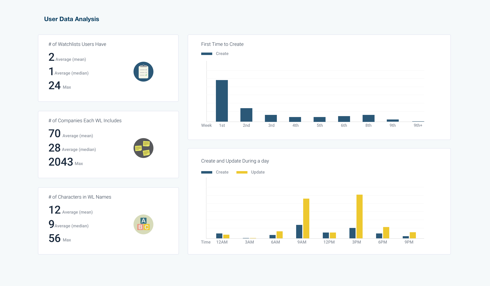

1. BACKGROUND
A watchlist consisting of selected companies is the fundamental information unit for financial professionals in their day-to-day work efforts, used to monitor stock market trends, predict investment benefits, and compare interest returns. Each financial service platform provides similar functionalities for their watchlists. A critical challenge for all software vendors, however is how to efficiently manage the lists.
Watchlist, a product available on Visible Alpha’s platform, has been available for clients use for the past two years. During this time, feedback was gathered from our clients, financial professionals working for investment houses, hedge funds and other financially-based firms. It was identified that the inefficiency of managing workflows blocked our clients from using downstream applications such as the e-newsletter setting application. To encourage greater use of Watchlist and fill the gap between Watchlist and downstream applications, the execution team made two decisions: to redesign Watchlist and to reconsider its position within our product line.
2.Problems
Identification of the issues and challenges associated with the product, both large and small, was necessary. A series of meetings were held with the Product Manager (PM) to gather information on perceived issues. During the first meeting with the PM, she delivered extensive detail and messages to me based on the feedback she collected during the two years in which the product was live. Her notes included:
- observations from user training sessions,
- bug reports from the support team,
- new expectations about desired features from users' email, and
- product opinions from the CEO.
The PM asked, based on my experience, for a plan to move forward. Specifically, she wanted direction about how to manage the coming sprints?
3. PLAN & EXECUTION
Although a great deal of information came to me at once, I determined that there was a critical need to define the scope of the project before moving forward. By studying all of the inputs and the product itself, I determined that there were two problems to be solved in this project. The first issue was the unfriendly workflows to create and manage watchlists, and the second one was the disconnect between Watchlist and downstream applications.
Due to the hectic and complicated work schedules of our primary end-users (financial professionals), there was no opportunity to speak directly with clients for their direct feedback on needs and issues related to Watchlist. Thus, as the first step, I studied the database to learn user behavior. Next, I facilitated a workshop with the established team for the product redevelopment. This group included the PM, Marketing Specialists, members of the Development Team, members of the Client Support Team and me. The workshop focused on defining the product mission, followed by developing users' portraits and prioritizing the features related to Watchlist. The last step was for me to create a product plan that included short-term, mid-term ,and long-term goals to capture the prioritized features.

3.1 DATA ANALYSIS
I thought it was important to understand behavior patterns of the end-users from three perspectives. First, how many watchlists did active users maintain at any given time? When did they create them? Second, how many companies did they include in one watchlist? What attributes did these companies share? Third, how did our clients name their watchlist(s)? Did the names indicate any information about how they use their watchlists?
Some of the facts identified include:
1. Over 70% of our active users had at least one watchlist on the platform.
2. 50% of users created their first watchlist during the onboarding session. 20% of users waited approximately two weeks to return to the platform to create their first watchlist. Nearly all of the remaining 30% created their first watchlist within two months of creating their accounts.
3. Approximately 50% of end-users named their watchlists with ordinal numbers, the creation date, or combination of both to name. The remaining 50% of people named their watchlist according to a specific function, such as 'S&P 500'.

3.2 Define our product
I was inspired by a 2C website buildup framework (deisgned byChris Do) that talks about the method for putting features onto commercial websites. Based on my knowledge, the first critical step is to define the product. It is vital to understand the needs and requirements of the users – both what the requirements are and why they have such requirements. By understanding these factors, a clearer direction for the redesigned product would become visible. Thus, during the aforementioned workshop, I led participants to use adjectives to answer all the following questions:
How would we describe our users?
How do we sound to the clients?
How do they feel when using this product?
What do they feel after using this product?
What makes our product special?
Based on all of the words listed, we selected three answers for each of the questions, then decided on one to be included in the final version. Finally, I put the words together to write a sentence that represents our product.

3.3 DRAW USERS' PORTRAITS
We conducted an analysis of our users' archetypes and roles within financial firms. Based on these roles, we listed how they process industry data and content every day. How did Watchlist help or benefit them? Moreover, which tasks did our product leave unsupported for them?

3.4 PRIORITIZING FEATURES
Based on the answers provided in the previous step, we brainstormed both solutions and features. After listing all of them, we measured them against four factors, marketing term, users' desirable, effect of features, and development difficulty. We divided the marketing term into short, middle, and long-term. Feature effect was divided into basic effects, performance improvement, and delighted effect. Users' desirable and development difficulty were each rated from 1 to 10.
During this step, we needed to separate vaguely described features into specific sub-features. As an example, ‘create a watchlist on the homepage’ is a vague feature. We need to clarify where and how.In this version, Watchlist had companies grouped into one watchlist, which was identified as a basic feature in the short-term.
As an enhancement, we proposed a watchlist based on filters, such as hotel industry companies. We called it an ‘explore list’. To create one filter for the explore list is a basic feature in the mid-term. Further, to create filter combinations was a delighted feature in the long-term, such as the top 20 hotel companies plus Airbnb. To ensure the benefits of these innovation features, we needed to conduct testing after the first term.

We put all these features into three terms and then balanced the number of users' desirable rating and development difficulty rating. We wanted the numbers to decrease linearly. I proposed that by the end of each phase I would facilitate user testing. Room would be needed for iterations and modifications. Finally, we balanced the number of basic, improving performance, and delighted features. For this component of the effort, the total number decreased linearly as well.

3.5 Roadmaps
In the end, we arrived at a roadmap possessing three terms. The short-term started with fundamental features that could be implemented right away for the next sprint. Mid-term changes would begin in three to six months, followed by user testing to iterate the short-term design. For the long-term plan, we would focus on more innovative design features. This would be for changes to be developed in approximately one year.

4 Takeaway
Hosting a task-orientated workshop with team members representing the various departments aligns each team to the goal of the product based on users' needs. It is to set up a communicative method for teams to collaborate.
The proper framework helped me to run an efficient and effective workshop with fewer efforts.